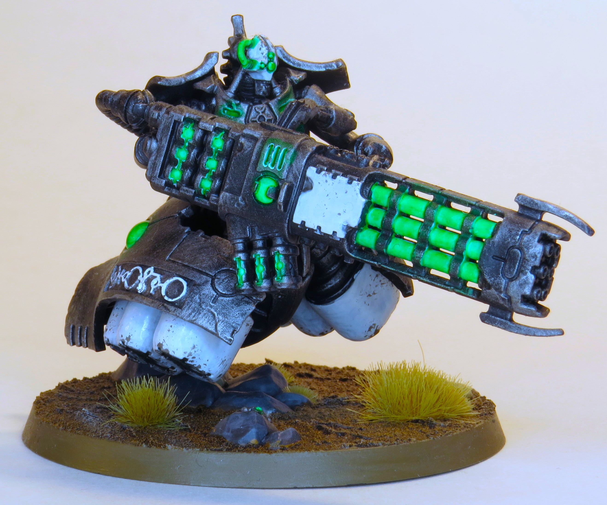
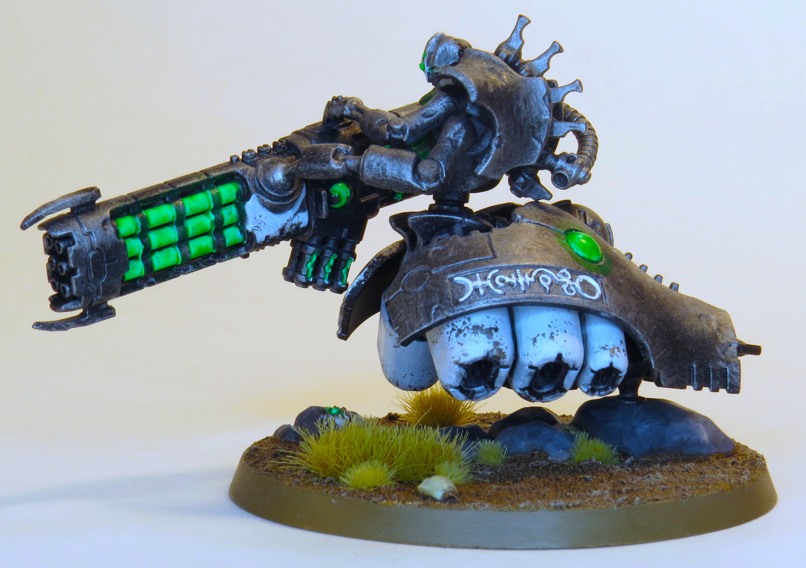
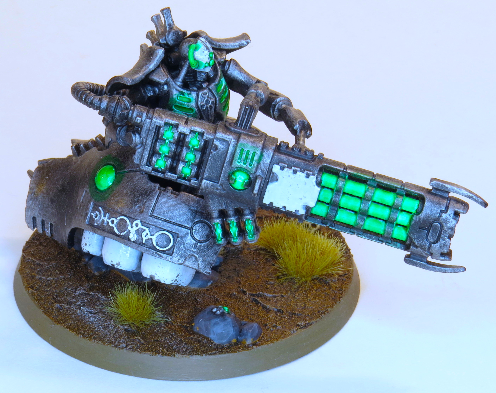

My wife bought this guy because he has thick thighs. Works for me because he was fun to paint, especially the face



Paints Used:
Steel: Chaos Black primer, fill in missed spots with Abaddon Black, heavy drybrush Leadbelcher, light drybrush Stormhost Silver
White Panels: Celestra Grey, Nuln Oil all over, Ulthuan Grey around damage, edge highlight Vallejo White, Leadbelcher on a sponge brush for damage, selective Ardcoat for glossy spots
Blades: Vallejo White, Hexwraith Flame, Glaze Vallejo White over half, Vallejo White on edge, Ardcoat
Lenses/Orbs: Vallejo White, one or two coats of Hexwraith Flame, including over nearby metal, Ardcoat
Green Details: Vallejo White, one or two coats of Hexwraith Flame, including over nearby metal
White Letters: Vallejo White, Leadbelcher on a sponge brush for damage
Base Rocks: Mechanicus Standard Grey, Nuln Oil all over, highlight Dawnstone
Base Metal: Leadbelcher, Nuln Oil all over, highlight Stormhost Silver
Base: Vallejo Brown Earth Texture, Agrax Earthshade all over, drybrush Screaming Skull, Gamers Grass Dry Tufts and TinyTufts Beige, Steel Legion Drab rim